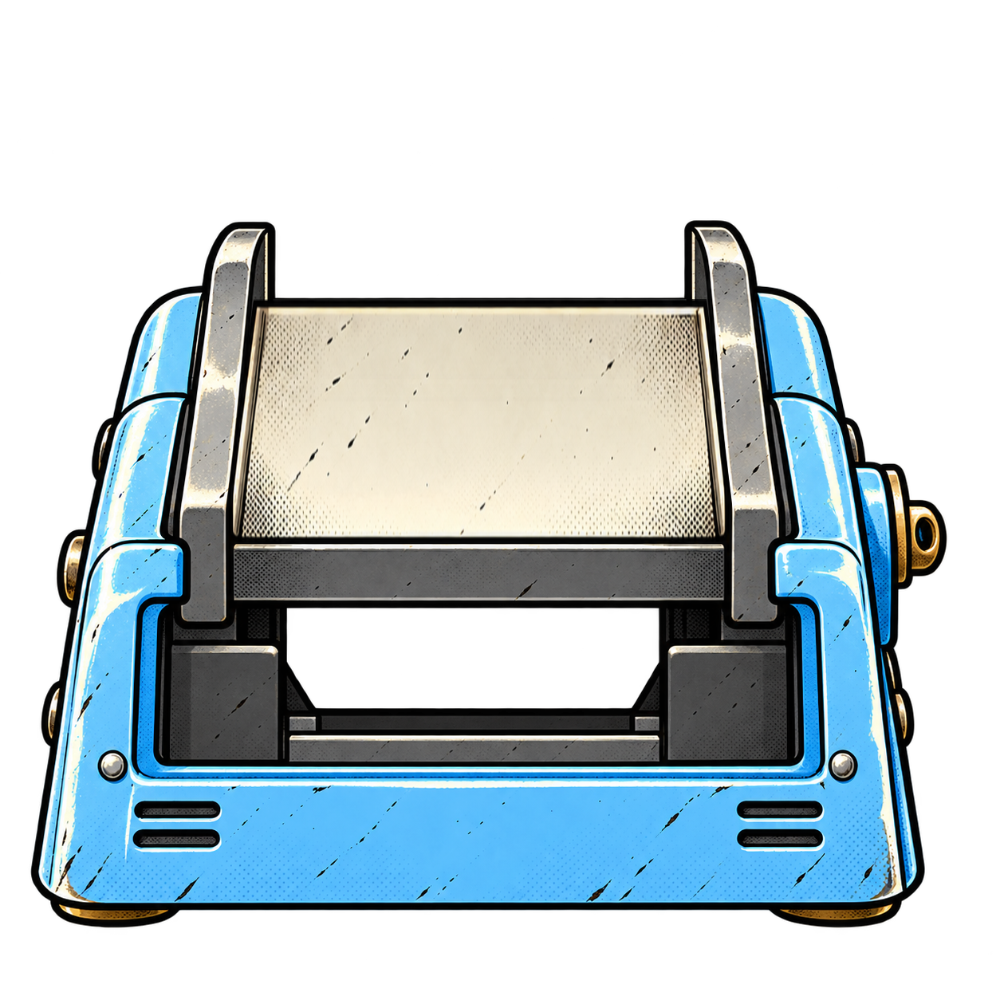
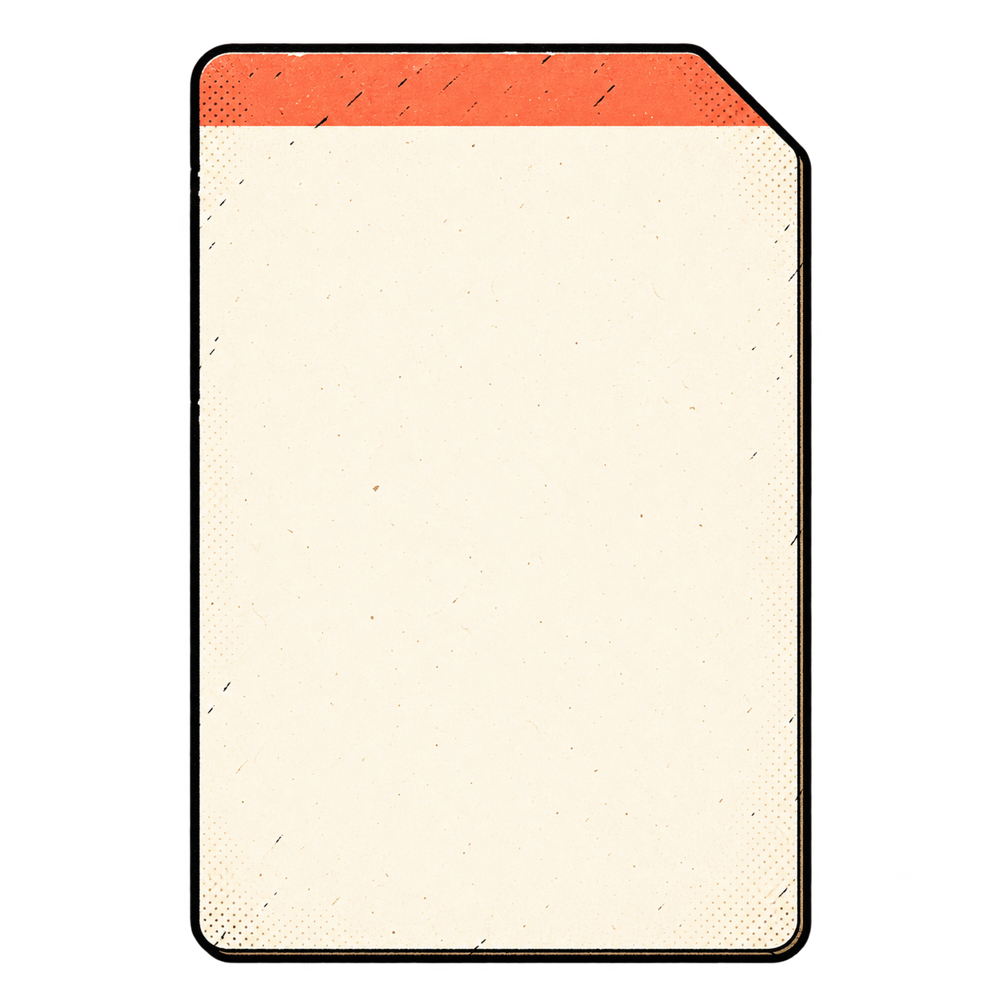
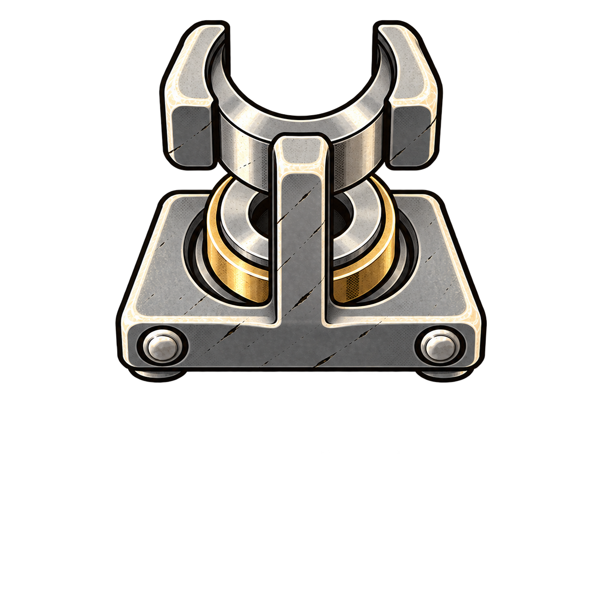
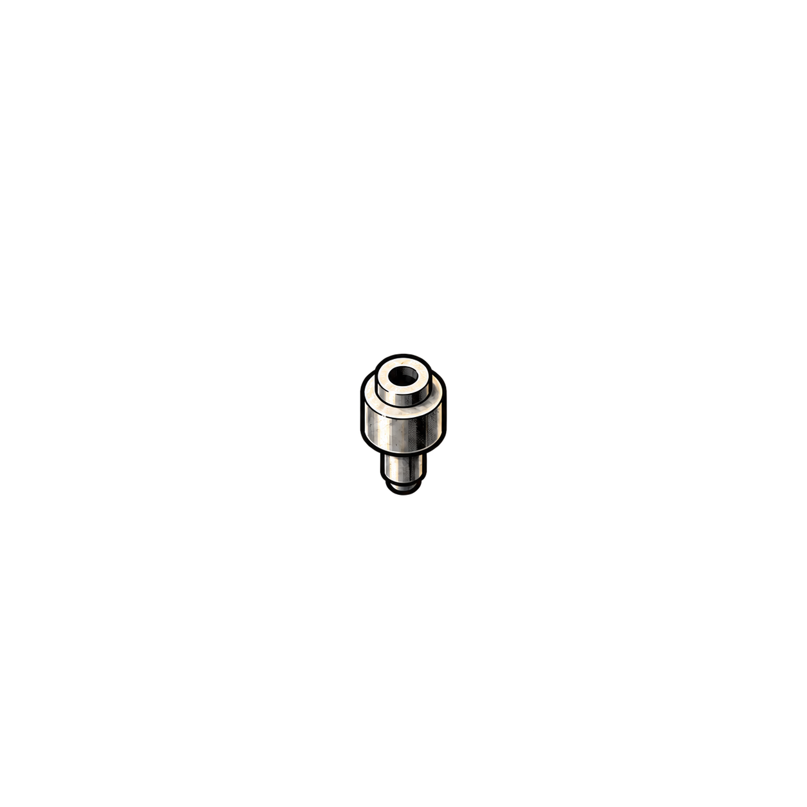
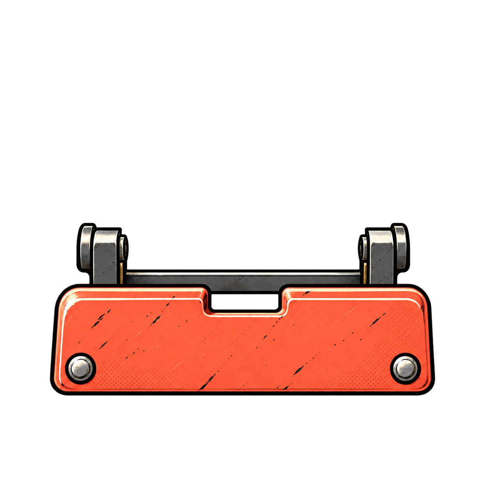
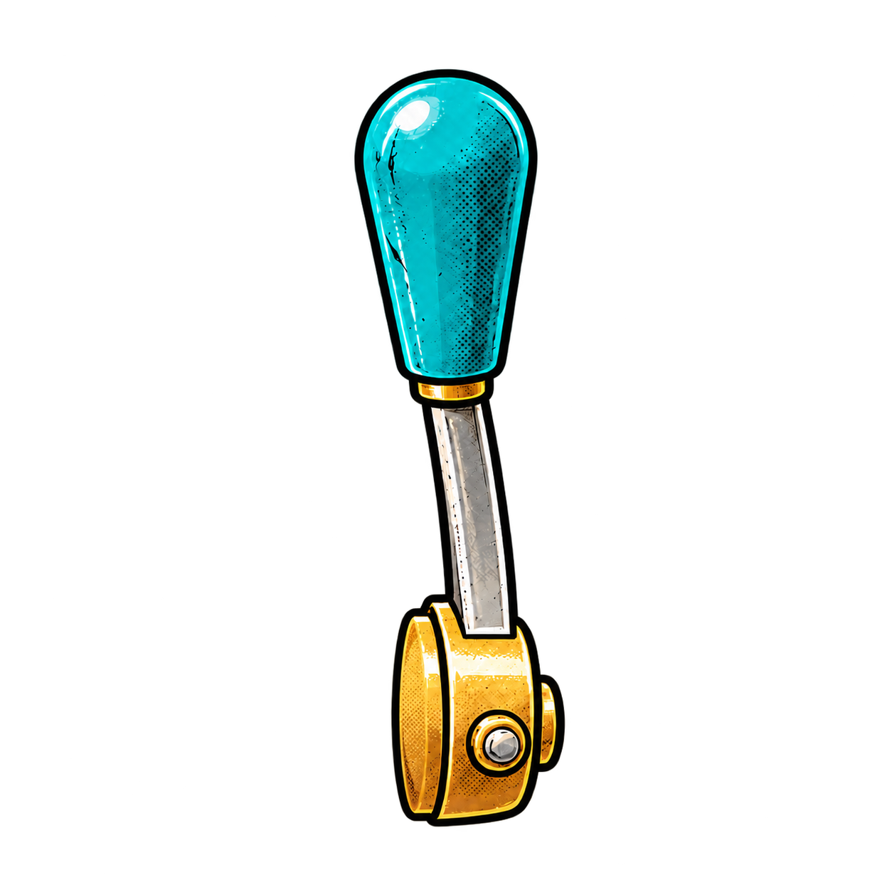

使用本次生成的透明素材 · 约 60° 俯视的纸卡、导向座与冲头 · 预览无音频，不计算真实测量值






正常：扳手固定在右轴，冲头沿机口的四个工位移动，每打完一行，纸卡进一行。
预备拍：显示 4、3、2、1，数字逐拍放大、淡出；此预览仅模拟120 BPM的四拍，不播放音频。
纸面：用竖直原图和孔层一起投影出上窄下宽的纸面；送料同时补偿横向宽度，使正在打孔的一行始终与进纸口对齐。
完成：原卡沿床面退出 → 翻起并竖直展示 → 保留32个孔。预览仅标记完成，不编造毫秒数据。
中断：停止采集 → 完成收杆 → 原纸卡沿导轨退回 → 保留已有孔并标明“本次未完成”。
重试：用户主动按按钮 → 旧卡退出 → 装入空白卡 → 先听一小节 → 从下个强拍开始。
反馈：不补漏掉的孔；不把失败绘成一次打孔；正式打孔阶段不增加额外视觉节拍提示。
这是独立设计预览。它展示素材、遮挡和中断动作，不复现设备上的音频时钟或真实判定。